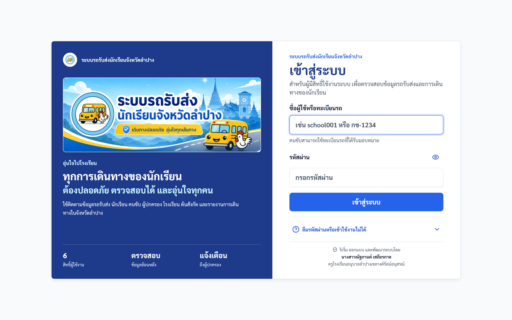
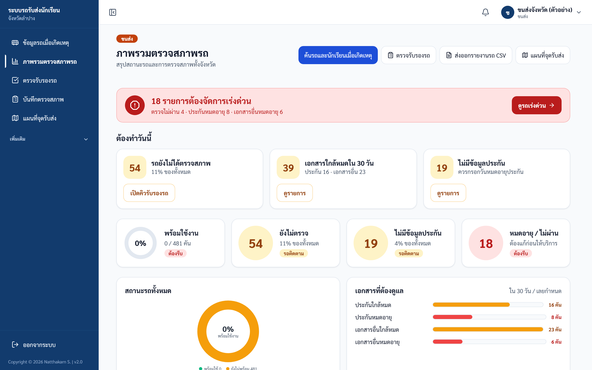
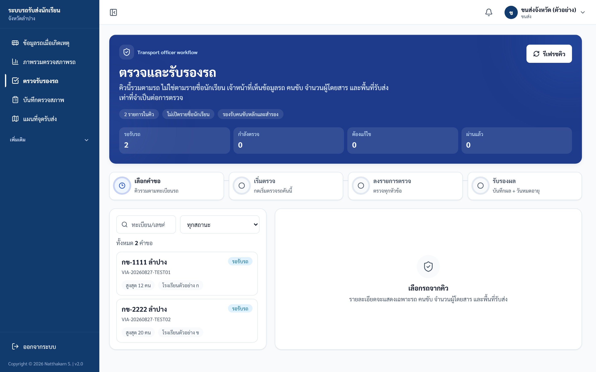
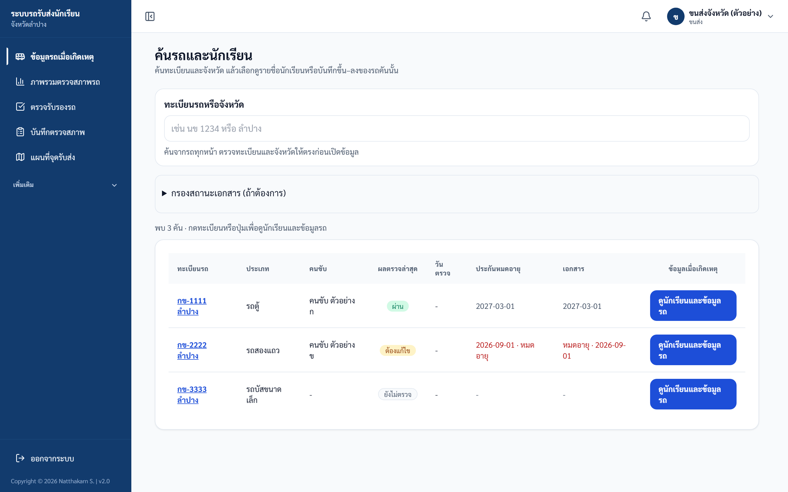
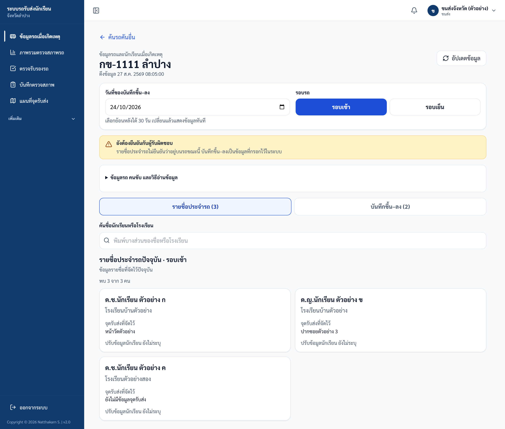
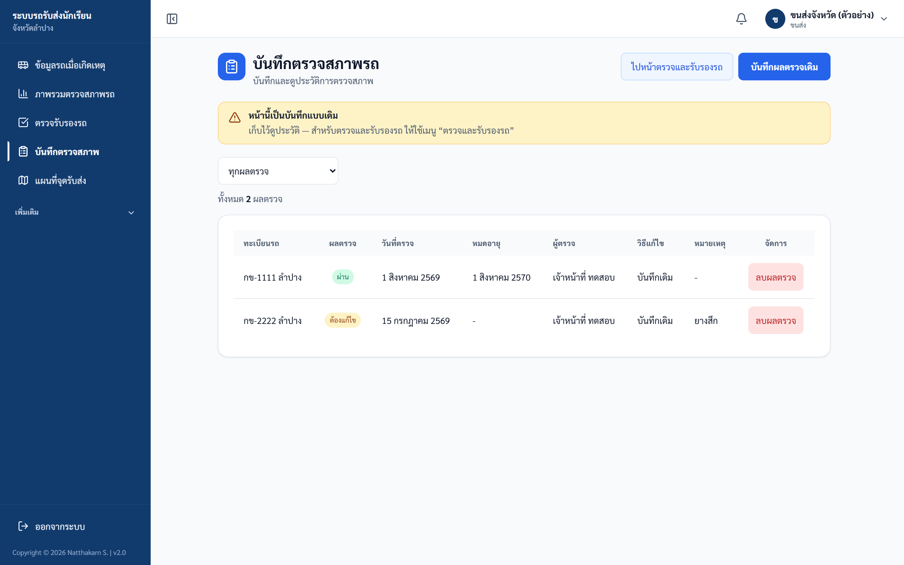
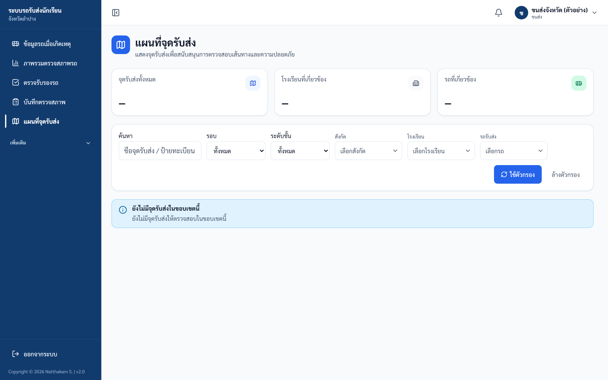
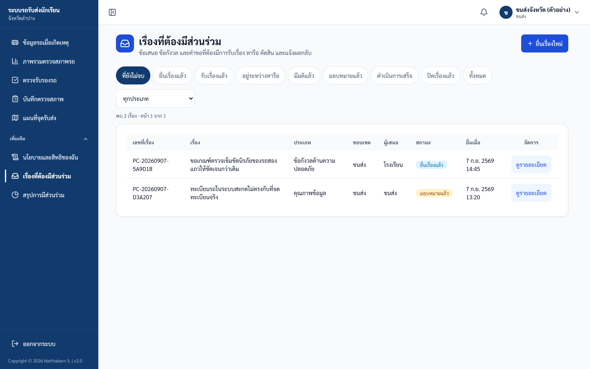
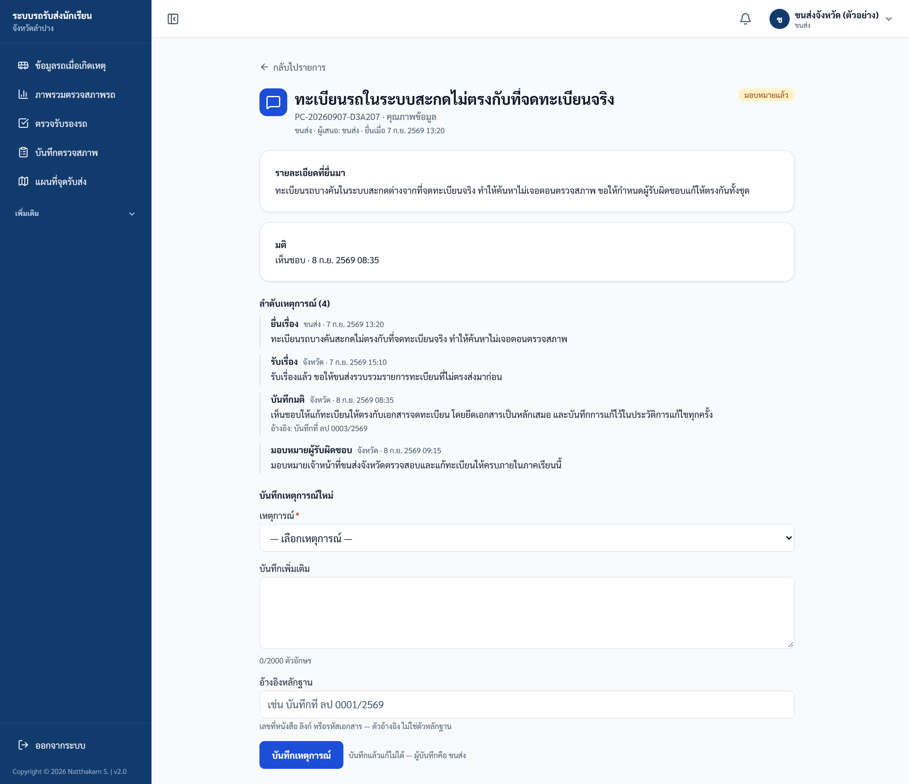
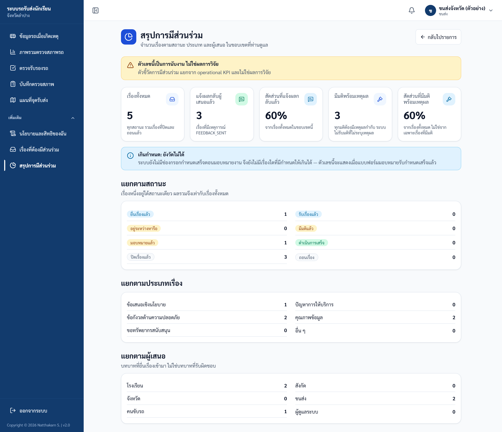

คู่มือเจ้าหน้าที่ขนส่ง
ℹ️ เว็บไซต์ https://schoolbuslampang.com · ปรับปรุง 24 ต.ค. 2569 · ภาพในคู่มือเป็นข้อมูลตัวอย่าง (ชื่อและเบอร์โทรถูกเบลอ)
คู่มือนี้สำหรับใคร และทำอะไรได้บ้าง
สำหรับเจ้าหน้าที่ขนส่งที่ตรวจสภาพรถและรับรองรถรับส่งนักเรียน บัญชีนี้ดูรถได้ทั้งจังหวัด
- ดูภาพรวมรถทั้งจังหวัด ว่าคันไหนต้องรีบจัดการ
- ตรวจและรับรองรถจากคำขอที่โรงเรียนส่งมา รวมถึงตรวจเอกสารรถและคนขับ
- เมื่อเกิดเหตุ ค้นรถแล้วดูรายชื่อนักเรียนประจำรถและบันทึกขึ้น–ลงรถ
- ส่งออกรายงานความปลอดภัยรถเป็นไฟล์ CSV
- ดูแผนที่จุดรับส่ง และติดตามเรื่องที่ต้องมีส่วนร่วมของขนส่ง
เริ่มต้นใช้งาน
เข้าสู่ระบบ
- เปิด https://schoolbuslampang.com
- พิมพ์ชื่อผู้ใช้ของคุณในช่อง ชื่อผู้ใช้หรือทะเบียนรถ (ใช้ชื่อผู้ใช้ ไม่ใช่ทะเบียนรถ)
- พิมพ์รหัสผ่าน
- กด เข้าสู่ระบบ

ภาพ: หน้าเข้าสู่ระบบ
ทำเสร็จแล้วจะเห็นหน้า ภาพรวมตรวจสภาพรถ
เข้าครั้งแรก: ต้องเปลี่ยนรหัสผ่าน
ถ้าใช้รหัสที่ได้รับมาครั้งแรก ระบบจะพาไปหน้าเปลี่ยนรหัสผ่านเอง และยังใช้เมนูอื่นไม่ได้จนกว่าจะเปลี่ยนเสร็จ
- พิมพ์รหัสเดิมในช่อง รหัสผ่านปัจจุบัน
- พิมพ์รหัสใหม่ในช่อง รหัสผ่านใหม่ อย่างน้อย 8 ตัวอักษร
- พิมพ์รหัสใหม่อีกครั้งในช่อง ยืนยันรหัสผ่านใหม่
- กด เปลี่ยนรหัสผ่าน
- เข้าสู่ระบบใหม่ด้วยรหัสใหม่

ภาพ: หน้าเปลี่ยนรหัสผ่าน
💡 ห้ามใช้รหัสที่เดาง่าย เช่น 12345678 หรือ password ห้ามตรงกับชื่อผู้ใช้ และห้ามซ้ำรหัสเดิม
ลืมรหัสผ่าน
บัญชีขนส่งยังตั้งรหัสใหม่เองไม่ได้ ที่หน้าเข้าสู่ระบบ กด ลืมรหัสผ่านหรือเข้าใช้งานไม่ได้ ระบบจะบอกว่า ต้นสังกัด ขนส่ง และจังหวัด: ติดต่อผู้ดูแลระบบระดับจังหวัด เมื่อได้รับการรีเซ็ตแล้ว คุณต้องตั้งรหัสใหม่ตอนเข้าสู่ระบบครั้งถัดไป
เมนูอยู่ที่ไหน
- บนคอมพิวเตอร์: เมนูอยู่ด้านซ้าย มี ข้อมูลรถเมื่อเกิดเหตุ · ภาพรวมตรวจสภาพรถ · ตรวจรับรองรถ · บันทึกตรวจสภาพ · แผนที่จุดรับส่ง ล่างสุดมีหมวด เพิ่มเติม กดเพื่อเปิด จะเห็น นโยบายและสิทธิของฉัน · เรื่องที่ต้องมีส่วนร่วม · สรุปการมีส่วนร่วม
- บนมือถือ: แถบล่างมี 4 ปุ่ม คือ หน้าแรก · ตรวจเอกสาร · ตรวจรถ · แผนที่ เมนูอื่นให้กดปุ่มขีดสามขีด (☰) มุมซ้ายบน
- เปลี่ยนรหัสผ่าน / ออกจากระบบ: กดชื่อหรือวงกลมตัวอักษรย่อที่มุมขวาบน

ภาพ: เมนูบัญชีมุมขวาบน มีเปลี่ยนรหัสผ่านและออกจากระบบ
งานประจำวัน (ทำตามลำดับ)
- เปิด ภาพรวมตรวจสภาพรถ ดูว่ามีรถที่ต้องรีบจัดการไหม
- เปิด ตรวจรับรองรถ ตรวจรถตามคำขอในคิว
- ตรวจเอกสารรถและคนขับที่แนบมา
1. ดูภาพรวมตรวจสภาพรถ
หน้านี้เป็นหน้าแรกหลังเข้าสู่ระบบ อ่านจากบนลงล่าง
- กล่องสีด้านบน บอกเรื่องสำคัญที่สุด
- สีแดง N รายการต้องจัดการเร่งด่วน เช่น ตรวจไม่ผ่าน ประกันหมดอายุ เอกสารอื่นหมดอายุ หรือข้อมูลผลตรวจไม่ตรงกัน กด ดูรถเร่งด่วน
- สีเหลือง รถยังไม่ได้ตรวจสภาพ N คัน หรือ มีรถยังไม่พร้อมใช้ N คัน กด เปิดคิวรับรองรถ
- สีเขียว รถทุกคันพร้อมใช้งาน แปลว่าไม่มีงานค้าง
- ต้องทำวันนี้ การ์ดงานไม่เกิน 3 ใบ เช่น เอกสารใกล้หมดใน 30 วัน กด ดูรายการ
- ตัวเลข 4 ช่อง: พร้อมใช้งาน · ยังไม่ตรวจ · ไม่มีข้อมูลประกัน · หมดอายุ / ไม่ผ่าน
- รายการรถ เรียงคันที่เสี่ยงที่สุดไว้บน กดปุ่มกรอง ทั้งหมด · เร่งด่วน · รอตรวจ · ใกล้หมด · พร้อมใช้ หรือพิมพ์ทะเบียนในช่องค้นหา

ภาพ: หน้าภาพรวมตรวจสภาพรถ
- อ่านกล่องสีด้านบน ถ้าเป็นสีแดง กด ดูรถเร่งด่วน ก่อน
- ที่แถวรถ กด เปิดคิวรับรอง หรือ บันทึกตรวจ (ปุ่มจะขึ้นตามสถานะของรถคันนั้น)
- ถ้าต้องคุยกับคนขับ กด โทรคนขับ (มีเฉพาะรถที่มีเบอร์คนขับ)
ทำเสร็จแล้วจะรู้ว่าวันนี้ต้องตรวจรถคันไหนก่อน
ℹ️ รถจะนับว่า พร้อมใช้งาน เมื่อรับรองแล้ว ผลตรวจผ่าน และเอกสารทุกอย่างยังไม่หมดอายุ ("เอกสาร" คือ ประกัน ทะเบียน พ.ร.บ. และภาษี) ถ้ารถมีมาก รายการจะแสดงบางส่วน ตัวเลขทั้งจังหวัดให้ดูจากตัวเลข 4 ช่องด้านบน
2. ตรวจรับรองรถตามคำขอ
โรงเรียนเป็นผู้ส่งคำขอตรวจรถ คุณตรวจและรับรองผลในเมนู ตรวจรับรองรถ (บนมือถือคือปุ่ม ตรวจเอกสาร) หน้านี้ชื่อ ตรวจและรับรองรถ
- ถ้าคิวยังไม่อัปเดต กด รีเฟรชคิว
- เลือกคำขอจากคิวด้านซ้าย (ค้นด้วยทะเบียน เลขคำขอ หรือโรงเรียนได้)
- ในแท็บ ตรวจรถ ดูข้อมูลรถ จำนวนผู้โดยสาร และพื้นที่รับส่ง
- เปิดแท็บ คนขับของรถ ตรวจว่ามีคนขับแล้ว (ถ้ายังไม่มี จะมีจุดสีแดงที่ชื่อแท็บ)
- กลับมาแท็บ ตรวจรถ แล้วกด เริ่มตรวจรถคันนี้
- เลือกผลทีละหัวข้อ: ผ่าน / ไม่ผ่าน / ไม่เกี่ยวข้อง (ถ้าทุกข้อผ่าน กด ผ่านทั้งหมด ได้)
- หัวข้อที่ไม่ผ่าน ให้พิมพ์ในช่อง ระบุสิ่งที่ต้องแก้ไข
- ที่กล่อง สรุปผลการตรวจ ตรวจผลรวมที่ระบบเลือกให้ แก้ได้ถ้าไม่ถูก
- ถ้าผลรวมเป็น ผ่าน ต้องใส่ วันหมดอายุ
- กด ยืนยันผลตรวจ

ภาพ: หน้าตรวจและรับรองรถ คิวด้านซ้าย รายละเอียดด้านขวา
ทำเสร็จแล้วจะเห็นข้อความ รับรองผลตรวจเรียบร้อย และระบบปรับสถานะความพร้อมของรถให้ใหม่
⚠️ ถ้ามีหัวข้อที่ไม่ผ่าน จะรับรองผลรวมว่า "ผ่าน" ไม่ได้ ให้เลือก ต้องแก้ไข หรือ ไม่ผ่าน
ถ้ามีคนอื่นตรวจรถคันนี้อยู่: จะเห็นกล่อง มีเจ้าหน้าที่กำลังตรวจรถคันนี้ พร้อมชื่อผู้รับงาน คุณเปิดดูได้ แต่สรุปผลแทนไม่ได้ ให้ผู้รับงานคนนั้นสรุปผลเอง
ถ้าต้องยกเลิกการตรวจครั้งนี้: กด ยกเลิกการตรวจ พิมพ์ เหตุผลที่ยกเลิกการตรวจ แล้วกดยืนยัน รายการที่ลงไว้จะถูกล้าง และรถจะกลับไปรอตรวจ (ถ้าเปลี่ยนใจ กด ตรวจต่อ)
3. ตรวจเอกสารรถและคนขับ
กล่อง เอกสารรถและคนขับ (หลักฐานประกอบ) อยู่ล่างสุดของรายละเอียดคำขอ มีไฟล์ที่คนขับแนบมา เช่น เล่มทะเบียนรถ พ.ร.บ. ป้ายภาษีรถ ประกันภัยรถ และใบขับขี่
- ถ้ารถมีคนขับมากกว่า 1 คน เลือกคนขับที่ช่อง เลือกคนขับเพื่อตรวจเอกสาร
- กด ดูไฟล์ เพื่อเปิดเอกสาร
- ถ้าถูกต้อง กด ผ่าน
- ถ้าไม่ถูกต้อง กด ไม่ผ่าน พิมพ์ เหตุผลที่ไม่ผ่าน แล้วกด ทำเครื่องหมายไม่ผ่าน
ทำเสร็จแล้ว ป้ายของเอกสารจะเปลี่ยนเป็น ผ่าน หรือ ไม่ผ่าน คนขับจะเห็นเหตุผลที่ไม่ผ่านและแนบไฟล์ใหม่ได้
จัดการคนขับของรถ (ทำเมื่อจำเป็น)
อยู่ในแท็บ คนขับของรถ กล่อง จัดการคนขับหลักและคนขับสำรอง
- เพิ่มคนขับ: ที่ เพิ่มสิทธิ์ขับรถคันนี้ เลือกคนขับ เลือกบทบาท (คนขับหลัก/คนขับสำรอง) ใส่วันสิ้นสุดสิทธิ์ แล้วกด เพิ่มเข้ากลุ่มรถ
- รับรองใบอนุญาตคนขับ: เลือกคนขับ พิมพ์เลขใบอนุญาต ประเภท (เช่น ท.2) วันหมดอายุใบอนุญาต และเลขอ้างอิงขนส่ง แล้วกด บันทึกรับรองคนขับ
💡 รถจะพร้อมใช้งานได้ต้องมีคนขับที่รับรองใบอนุญาตแล้วอย่างน้อย 1 คน
งานอื่น ๆ (ทำเมื่อจำเป็น)
เมื่อเกิดเหตุ: ค้นรถและดูรายชื่อนักเรียน
ใช้เมื่อมีเหตุกับรถรับส่ง และต้องรู้ว่ามีนักเรียนคนไหนอยู่ในรถคันนั้น
- เปิดเมนู ข้อมูลรถเมื่อเกิดเหตุ (หรือกดปุ่ม ค้นรถและนักเรียนเมื่อเกิดเหตุ ที่หน้าภาพรวม)
- ในหน้า ค้นรถและนักเรียน พิมพ์ทะเบียนรถหรือจังหวัด เช่น นข 1234
- ตรวจทะเบียนและจังหวัดให้ตรง แล้วกด ดูนักเรียนและข้อมูลรถ
- เลือก วันที่ของบันทึกขึ้น–ลง (วันนี้ หรือย้อนหลังได้ไม่เกิน 30 วัน)
- เลือก รอบเช้า หรือ รอบเย็น
- กด รายชื่อประจำรถ เพื่อดูนักเรียนที่จัดไว้กับรถคันนี้ หรือกด บันทึกขึ้น–ลง เพื่อดูว่ามีการบันทึกขึ้นรถ/ลงรถเวลาใด
- ถ้าต้องหาคนใดคนหนึ่ง พิมพ์ในช่อง ค้นชื่อนักเรียนหรือโรงเรียน
- ถ้าต้องการข้อมูลล่าสุด กด อัปเดตข้อมูล

ภาพ: หน้าค้นรถ กดทะเบียนรถหรือปุ่ม "ดูนักเรียนและข้อมูลรถ"

ภาพ: เลือกวันที่และรอบ แล้วสลับดู "รายชื่อประจำรถ" หรือ "บันทึกขึ้น–ลง" (ชื่อในภาพเป็นข้อมูลตัวอย่าง)
ทำเสร็จแล้วจะเห็นชื่อนักเรียนเต็ม โรงเรียน และจุดรับส่งที่จัดไว้ หรือเวลาบันทึกขึ้น–ลงรถ
⚠️ รายชื่อประจำรถ ไม่ได้ยืนยันว่านักเรียนอยู่บนรถตอนนี้ และบันทึกขึ้น–ลงเป็นข้อมูลที่คนขับกรอกไว้ ต้องยืนยันกับโรงเรียนหรือคนขับทุกครั้ง หน้านี้ไม่ใช่ตำแหน่งรถปัจจุบัน
ทุกครั้งที่เปิดหน้านี้ ระบบจะบันทึกว่าใครเปิดดู ให้เปิดเฉพาะเมื่อเกิดเหตุจริงเท่านั้น
บันทึกผลตรวจแบบเดิม
เมนู บันทึกตรวจสภาพ (บนมือถือคือปุ่ม ตรวจรถ) เป็นแบบเดิม ใช้ดูประวัติ และบันทึกผลสรุปครั้งเดียวสำหรับรถที่ยังไม่มีผลรับรองจากคิว ด้านบนจะมีแถบเหลือง หน้านี้เป็นบันทึกแบบเดิม เป็นเรื่องปกติ
- กด บันทึกผลตรวจเดิม เพื่อเปิดฟอร์ม
- เลือกรถที่ เลือกรถ (ถ้ายังไม่มีในรายการ เลือก อื่นๆ (เพิ่มทะเบียนรถใหม่))
- เลือก ผลตรวจ: ผ่าน / ไม่ผ่าน / ต้องแก้ไข / รอตรวจ
- ตรวจ วันที่ตรวจ (ระบบใส่วันนี้ไว้ให้)
- ถ้าผลเป็น ผ่าน ต้องใส่ วันหมดอายุผลตรวจ (ไม่เกิน 2 ปีจากวันที่ตรวจ)
- กด บันทึกผลตรวจ

ภาพ: หน้าบันทึกตรวจสภาพและประวัติการตรวจ
ทำเสร็จแล้วจะเห็น บันทึกผลตรวจสำเร็จ และผลขึ้นในประวัติการตรวจด้านล่าง
- ถ้าเลือกรถแล้วเห็น รถคันนี้มีผลรับรองจากคิวแล้ว แปลว่าบันทึกที่หน้านี้ไม่ได้ ให้โรงเรียนส่งคำขอตรวจรอบใหม่ แล้วตรวจในเมนู ตรวจรับรองรถ
- ลบผลตรวจได้เฉพาะที่คุณบันทึกเอง กด ลบผลตรวจ ที่แถวนั้น แล้วยืนยัน ลบแล้วกู้คืนไม่ได้
ส่งออกรายงานรถเป็น CSV
- เปิด ภาพรวมตรวจสภาพรถ
- กด ส่งออกรายงานรถ CSV
- ถ้ามีกล่องให้ตรวจสอบก่อนดำเนินการ ให้อ่านแล้วกดปุ่มยืนยัน
ทำเสร็จแล้วจะได้ไฟล์ transport-vehicle-safety.csv มีทะเบียนรถ ประเภทรถ ผลตรวจล่าสุด วันที่ตรวจ และวันหมดอายุของผลตรวจ ประกัน ทะเบียน พ.ร.บ. และภาษี ไฟล์นี้ไม่มีข้อมูลนักเรียนและเบอร์โทร
ดูแผนที่จุดรับส่ง
- เปิดเมนู แผนที่จุดรับส่ง
- เลือกตัวกรองที่ต้องการ เช่น รอบ ระดับชั้น สังกัด โรงเรียน หรือรถรับส่ง
- กด ใช้ตัวกรอง (ถ้าต้องการเริ่มใหม่ กด ล้างตัวกรอง)
- กดหมุดบนแผนที่เพื่อดูรายละเอียดจุด

ภาพ: หน้าแผนที่จุดรับส่ง (ตัวอย่างตอนยังไม่มีข้อมูล)
แผนที่นี้แสดงเป็นภาพรวม ไม่มีรายชื่อนักเรียน
เรื่องที่ต้องมีส่วนร่วม
อยู่ในหมวด เพิ่มเติม ของเมนู ใช้ติดตามและตอบเรื่องที่ส่งถึงขนส่ง เช่น ข้อกังวลด้านความปลอดภัย หรือปัญหาการให้บริการ คุณเห็นเฉพาะเรื่องที่ขอบเขตเป็น ขนส่ง
- เปิด เรื่องที่ต้องมีส่วนร่วม (ระบบแสดงเรื่อง ที่ยังไม่จบ ก่อน ถ้าต้องการดูทุกเรื่อง เลือก ทั้งหมด)
- กด ดูรายละเอียด ที่เรื่องที่ต้องการ
- อ่าน รายละเอียดที่ยื่นมา และ ลำดับเหตุการณ์
- ที่ บันทึกเหตุการณ์ใหม่ เลือกเหตุการณ์ พิมพ์ข้อความ แล้วบันทึก

ภาพ: รายการเรื่องของขนส่ง

ภาพ: หน้ารายละเอียดเรื่องและลำดับเหตุการณ์
ลำดับที่ควรทำ: รับเรื่อง → ให้ความเห็นหรือหารือ → บันทึกมติ → มอบหมายผู้รับผิดชอบ → ดำเนินการเสร็จ → แจ้งผลกลับผู้เสนอ
- บันทึกมติ ต้องพิมพ์เหตุผลทุกครั้ง
- มอบหมายผู้รับผิดชอบ ต้องรู้รหัสผู้ใช้ของผู้รับผิดชอบก่อน (ขอได้จากผู้ดูแลระบบ)
- แจ้งผลกลับผู้เสนอ ทำได้เมื่อเรื่องเป็น "ดำเนินการเสร็จ" แล้วเท่านั้น เมื่อบันทึกแล้วเรื่องจะปิด
- บันทึกแล้วแก้หรือลบไม่ได้ ถ้าพิมพ์ผิด ให้เพิ่มความเห็นใหม่เพื่ออธิบาย
เมนู สรุปการมีส่วนร่วม แสดงตัวเลขรวมของเรื่องขนส่ง ดูบนจอได้อย่างเดียว

ภาพ: หน้าสรุปการมีส่วนร่วม
⚠️ ระบบไม่แจ้งเตือนเมื่อมีเรื่องใหม่ ควรตกลงในหน่วยงานว่าใครเปิดดู และเปิดบ่อยแค่ไหน
ต้องการแจ้งเรื่องใหม่: กด ยื่นเรื่องใหม่ เลือก ประเภทเรื่อง พิมพ์ หัวเรื่อง และ รายละเอียด แล้วกด ยื่นเรื่อง เรื่องจะอยู่ในขอบเขตขนส่งโดยอัตโนมัติ
ออกจากระบบ
- กดชื่อหรือวงกลมตัวอักษรย่อที่มุมขวาบน
- กด ออกจากระบบ
ทำเสร็จแล้วจะกลับมาที่หน้าเข้าสู่ระบบ ถ้าใช้เครื่องร่วมกับคนอื่น ให้ออกจากระบบทุกครั้ง
ปัญหาที่พบบ่อย
| ถ้าเห็น/ถ้าเกิด | ให้ทำแบบนี้ |
|---|---|
| ชื่อผู้ใช้หรือรหัสผ่านไม่ถูกต้อง | ตรวจชื่อผู้ใช้และรหัสผ่านอีกครั้ง ถ้ายังเข้าไม่ได้ ติดต่อผู้ดูแลระบบระดับจังหวัด |
| มีการพยายามเข้าสู่ระบบหลายครั้งจากเครือข่ายนี้ | รอประมาณ 15 นาทีแล้วลองใหม่ บัญชีไม่ได้ถูกปิด |
| เปิดหน้าไหนก็ถูกพาไปหน้าเปลี่ยนรหัสผ่าน | เปลี่ยนรหัสผ่านให้เสร็จก่อน แล้วจึงใช้เมนูอื่นได้ |
| ไม่สามารถเชื่อมต่อระบบได้ | ตรวจอินเทอร์เน็ต แล้วลองใหม่ |
| ไม่เห็นคำขอในคิว หรือข้อมูลคำขอผิด | ติดต่อโรงเรียนที่ส่งคำขอ เพราะโรงเรียนเป็นผู้สร้างคำขอ |
| ไม่เห็นปุ่ม เริ่มตรวจรถคันนี้ | คำขอต้องเป็นสถานะ รอรับรถ ยื่นแล้ว ต้องแก้ไข หรือกำลังตรวจ ถ้าเป็นสถานะอื่นจะเริ่มตรวจไม่ได้ |
| ปุ่ม ยืนยันผลตรวจ กดไม่ได้ | อ่านเหตุผลข้างปุ่ม เช่น ยังตรวจไม่ครบ หัวข้อที่ไม่ผ่านยังไม่ได้พิมพ์รายละเอียด หรือผลผ่านยังไม่ใส่วันหมดอายุ |
| มีเจ้าหน้าที่กำลังตรวจรถคันนี้ | ให้ผู้รับงานคนนั้นสรุปผลเอง |
| หน้าบันทึกตรวจสภาพขึ้นว่า รถคันนี้มีผลรับรองจากคิวแล้ว | ให้โรงเรียนส่งคำขอตรวจรอบใหม่ แล้วตรวจในเมนู ตรวจรับรองรถ |
| ผลผ่านต้องระบุวันหมดอายุการรับรอง | ใส่วันหมดอายุผลตรวจ แล้วกดบันทึกอีกครั้ง |
| วันที่ตรวจต้องไม่เป็นวันในอนาคต / วันที่ตรวจย้อนหลังเกินกำหนด (ไม่เกิน 1 ปี) | แก้วันที่ตรวจให้เป็นวันนี้หรือย้อนหลังไม่เกิน 1 ปี |
| ลบได้เฉพาะผลตรวจที่คุณเป็นผู้บันทึก | ให้เจ้าหน้าที่ที่บันทึกผลนั้นเป็นผู้ลบ |
| รถตรวจผ่านแล้ว แต่ยังขึ้นว่า ยังไม่พร้อมใช้ | ตรวจวันหมดอายุของเอกสารทั้ง 4 อย่าง และดูว่ามีคนขับที่รับรองใบอนุญาตแล้วหรือยัง |
| หน้าข้อมูลรถเมื่อเกิดเหตุขึ้นว่า ยังไม่พบบันทึกขึ้น–ลงในวันที่และรอบนี้ | ตรวจวันที่และรอบอีกครั้ง ถ้ายังไม่มี ให้ยืนยันกับโรงเรียนหรือคนขับโดยตรง |
| เลือกวันนี้หรือย้อนหลังได้ไม่เกิน 30 วัน | เลือกวันที่ใหม่ให้อยู่ในช่วง 30 วันล่าสุด |
| ดาวน์โหลดรายงานไม่สำเร็จ กรุณาลองอีกครั้ง | รอสักครู่แล้วกด ส่งออกรายงานรถ CSV อีกครั้ง |
ติดต่อใครเมื่อมีปัญหา
- ลืมรหัสผ่าน หรือบัญชีใช้ไม่ได้: ผู้ดูแลระบบระดับจังหวัด
- คำขอตรวจรถไม่มีในคิว หรือข้อมูลรถผิด: โรงเรียนที่ส่งคำขอ
- ผลตรวจที่คนอื่นบันทึกไว้ผิด: เจ้าหน้าที่ผู้บันทึกผลนั้น หรือผู้ดูแลระบบ
- ระบบขัดข้องเรื่องอื่น: ผู้ดูแลระบบ
สิ่งที่ต้องบอกเมื่อแจ้งปัญหา: ชื่อผู้ใช้ของคุณ · ทะเบียนรถหรือเลขคำขอ · เวลาที่เกิดปัญหา · ภาพหน้าจอที่เห็นข้อความ
ข้อควรระวังเรื่องข้อมูลนักเรียน
- เปิดหน้า ข้อมูลรถเมื่อเกิดเหตุ เฉพาะเมื่อเกิดเหตุจริง ระบบบันทึกทุกครั้งที่เปิดดู
- ห้ามถ่ายภาพ คัดลอก หรือส่งต่อรายชื่อนักเรียน ให้ส่งต่อเฉพาะผู้ที่ต้องช่วยเหลือในเหตุนั้น
- ห้ามพิมพ์ชื่อนักเรียน เลขบัตรประชาชน หรือเบอร์โทร ในเรื่องที่ต้องมีส่วนร่วม ให้อ้างถึงด้วยทะเบียนรถหรือเลขคำขอแทน
- ไฟล์ CSV ที่ส่งออก ให้เก็บในเครื่องของหน่วยงาน และลบเมื่อใช้งานเสร็จ
ตรวจความเข้าใจหลังอบรม
- ☐ เข้าสู่ระบบ และเปลี่ยนรหัสผ่านได้
- ☐ ดูหน้าภาพรวมแล้วบอกได้ว่ารถคันไหนต้องรีบจัดการ
- ☐ ตรวจรถในคิว ลงผลทุกหัวข้อ และกด ยืนยันผลตรวจ ได้
- ☐ ตรวจเอกสารแล้วกด ผ่าน หรือ ไม่ผ่าน พร้อมเหตุผลได้
- ☐ ค้นรถและเปิดรายชื่อนักเรียนเมื่อเกิดเหตุได้ และรู้ว่าต้องยืนยันกับผู้รับผิดชอบเสมอ
- ☐ ส่งออกรายงานรถ CSV ได้